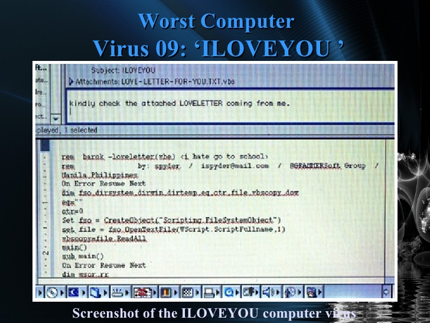

The 18 Most Terrifying Computer Viruses Of All Time

Anna Kournikova (2001)
The Anna Kournikova virus got its name because it pretended to the recipients that they were downloading a sexy image of the tennis star. The financial damage caused by this virus was limited, but the virus had a major impact on pop culture, even playing a defining role in an episode of the sitcom Friends.
Sasser (2004)
In April 2004, Microsoft released a security patch for Windows' Local Security Authority Subsystem Service (LSASS). Shortly thereafter, a teenager in Germany published the worm Sasser to exploit the vulnerability of unpatched systems. Various versions of Sasser shut down airline, transportation and hospital networks, causing a whopping $18 Billion in damage!
Melissa (1999)
Named after a stripper from Florida, the Melissa virus was designed to mail itself to the first 50 contacts it found in the victim's Outlook address book. The attack was so successful that the virus infected 20% of all computers in the world and caused an estimated $ 80 million in damage!
The creator of the virus David L. Smith was caught by the FBI, spent 20 months behind bars, and paid a fine of $5,000.
Zeus (2009)
Although many malware programs on this list are little more than annoying, Zeus (also known as Zbot) was used by a complex criminal organization.
The Trojan used phishing and keylogging to steal login credentials for online banking. As a result, it stole a total of $70 million from the accounts of its victims.
Storm Trojan (2007)
Storm Trojan is a particularly sinister type of malware that is distributed via e-mail. It was responsible for 8% of all infections worldwide, just three days after launching in January 2007.
The Trojan created a gigantic botnet of between one and 10 million computers, and because it was designed to change its code every 10 minutes, Storm Trojan proved remarkably resilient.
ILOVEYOU (2000)
The worm ILOVEYOU (also known as Love Letter) was hidden in the e-mail inboxes of its victims in the form of a text file from an admirer.
But this love letter was anything but sweet: in May 2000, it quickly spread to 10% of all Internet-connected computers, causing the FBI to shut down its own e-mail server to prevent its further dissemination. The estimated damage was $ 15 billion.
Sircam (2001)
Like other early-stage malware, Sircam used social engineering by tricking people into opening an e-mail attachment.
The worm selects any Microsoft Office file on the victim's computer, infects it, and sends it to all the people on the victim's contact list. According to a study by the University of Florida, the cost of the Sircam removal amounted to $ 3 billion.
Nimda (2001)
Released shortly after the September 11 terrorist wave, many believed that the devastating Nimda worm was associated with al-Qaeda, although this was never proven. The then Attorney General John Ashcroft denied a connection.
It spread into many different systems and brought down the networks of banks, courts and other important computer systems. The cleanup cost for Nimda was more than $ 500 million in the first few days alone.
Michelangelo (1992)
The Michelangelo virus spread on comparatively few computers and caused little real damage. But the concept of a computer virus programmed to do damage on March 6, 1992, caused media-driven mass hysteria. Many did not dare turn on the PC even on the anniversaries of the set date.
SQL Slammer / Sapphire (2003)
With a slender 376 bytes, the SQL Slammer worm provided much destruction in a small package. The worm slowed down the Internet, paralyzed Bank of America’s 12,000 ATMs in the United States, and caused South Korea to take much of the country offline. It also crashed the network of the Davis-Besse nuclear power plant in Ohio.
Code Red (2001)
The Code Red worm, named after its creator's favorite lemonade, infected up to a third of all Microsoft ISS web servers.
It even took www.whitehouse.gov off the net. The homepage was replaced with the message: "Hacked by Chinese!" The estimated damage by Code Red went into the billions of dollars worldwide.
Cryptolocker (2014)
Computers infected with Cryptolocker had important files on their hard drive encrypted and released only for a ransom. If you paid about $ 300 in Bitcoin to the hackers, you would get your data back. If not, you would be locked out forever.
Sobig.F (2003)
The Trojan Sobig.F infected about two million PCs in 2003, prevented Air Canada from making aircraft launches, and slowed down global computer networks. This malicious camouflaged pest caused $ 37.1 billion in cleanup costs. It was one of the most expensive malware repair projects in history.
Skulls.A (2004)
Skulls.A is a dreaded cell phone Trojan that hit the Nokia 7610 smartphone and other devices with SymbOS. The malicious software was designed to turn all icons on the infected phone into a skull and crossbones and disable all functions of the phone. Apart from calling and accepting conversations, nothing worked.
According to F-Secure Skulls.A caused little damage, but the Trojan is undeniably scary.
Stuxnet (2009)
Stuxnet is one of the first known viruses created for cyber warfare. Developed jointly by the United States and Israel, Stuxnet targeted Iran's nuclear enrichment systems.
Infected computers instructed nuclear centrifuges to spin until they broke. Meanwhile, fake reports were generated that everything went as normal.
MyDoom (2004)
In April 2004, TechRepublic MyDoom called "the worst virus outbreak ever," and that's no surprise. The worm increased the average page load on the Internet by 50%, blocked infected computers access to the websites of anti-virus programs and drove a denial of service attack against the industry giant Microsoft.
The worldwide cost of cleaning up MyDoom is estimated at nearly $ 40 billion.
Netsky (2004)
The Netsky worm, created by the same teenager who had developed Sasser, moved around the world through e-mail attachments. The P variant of Netsky was the most widespread worm in the world. This was even more the case two years after its appearance in February 2004.
Conficker (2008)
The worm Conficker (also known as Downup, Downadup, Kido), discovered in 2008, was created to paralyze the antivirus programs of infected computers and prevent automatic updates that would otherwise have removed Conficker from the computer.
Conficker quickly spread to various important computer networks, including those of the English, French and German armed forces - and caused a damage of $ 9 billion.